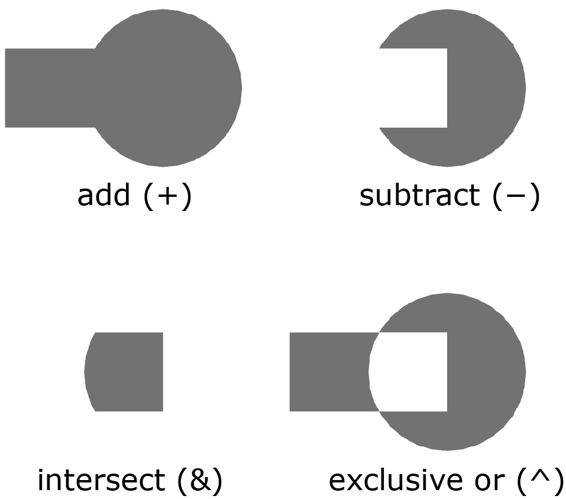
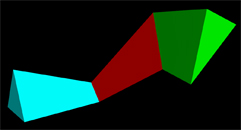
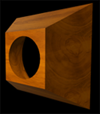

If you're new to Python
and VPython: Introduction
A VPython tutorial
Pictures of 3D objects
What's new in VPython 6
VPython web site
VPython license
Python web site
Math module (sqrt etc.)
Numpy module (arrays)
extrusion |

The extrusion object extrudes a 2D shape along a path. Here is the minimal syntax:
ex = extrusion(pos=..., shape=...)
The pos attribute is a list of points like the pos attribute of a curve object. Various tools simplify the creation of complicated paths. The shape attribute is a Polygon object with contours describing a 2D shape that can contain holes. Various tools simplify the creation of complicated 2D shapes. There are options to vary the size (scale, xscale, yscale) and twist of the 2D shape along the extrusion path.
Before studying the following details, please run the example program extrusion_overview.py, which is included in the VPython example programs. Later, see the example program extrusion_samples.py, which gives more complex examples.
The program extrusion_overview.py offers an interactive tutorial on the main features of the extrusion object. Here is a copy of that program.
Choose an extrusion topic:
The three steps to make an extrusion
Creating a 2D shape to extrude
Using the paths library to construct a Polygon object
How the extrusion machinery works
List of all the extrusion attributes
Using numpy to manipulate array attributes
The three steps to make an extrusion
1) Create a 2D shape, either by giving a list of points to the Polygon function or by choosing a shape from a supplied library of common shapes. Here are two examples. The first creates a triangle by providing 3 points to the Polygon function. The second chooses a circular shape from the shapes library to be discussed later and positions it near the center of the triangle.
tri = Polygon( [(-2,0), (0,4), (2,0)] )
circ = shapes.circle(pos=(0,1.5), radius=0.8)
2) Create a path along which to extrude your shape (just like the pos attribute of a curve object), either by giving a list of points or by choosing a path from a supplied library of common shapes. Here are two examples. The first is a 2-point line, headed into the screen (-z direction). The second chooses a semicircular arc from the paths library to be discussed later (pi radians is 180 degrees).
straight = [(0,0,0),(0,0,-4)]
semicircle = paths.arc(radius=3, angle2=pi)
3) Create an extrusion object to extrude your shape along your path. Here we've assigned the "straight" path to the pos attribute, and the "tri" shape to the shape attribute.
extrusion(pos=straight, shape=tri,
The result is that the triangular shape is extruded in the -z direction. |
 |
An important feature is that you can combine simple shapes to make complex ones. For example, if we subtract the circular shape ("circ") from the triangle shape ("tri"), and assign this to the extrusion shape attribute, we get the following:
extrusion(pos=straight, shape=tri-circ, |
 |
If we assign the semicircle path to the extrusion pos attribute, we get the following:
extrusion(pos=semicircle, |
 |
The rest of this documentation provides more details on creating paths and shapes, and on how to manipulate the extrusion by specifying varying scale factors, twists, and colors along the path.
Creating a 2D shape to extrude
The 2D shape is generated with the aid of the Polygon contour function that is part of the Polygon module imported by VPython (from visual import * executes "from Polygon import Polygon"). The following statement will create a 2D triangle with a base of 4 and height of 4:
tri = Polygon( [(-2,0), (0,4), (2,0)] )
The Polygon function takes a Python "list" of points; note the format: extrusion(pos=[(0,0,0),(0,0,-4)], |
|
The Polygon module offers powerful ways to combine contours to make complex 2D shapes; this capability is called "constructive geometry". For example, let's create a rectangular contour which we can use to make a hole in our triangle:
hole = Polygon( [(-.5,.5),(-.5,2.5),(.5,2.5),(.5,.5)] )
We can create a hole in the 2D shape simply by subtracting the hole contour from the triangle contour, shape = tri - hole: extrusion(pos=[(0,0,0),(0,0,-4)], |
 |
Contours made with the Polygon function can be added (+), in which case a new contour includes both pieces or subtracted (-) to make holes. They can be intersected (&) to form a surface that includes only those pieces common to both contours, or "exclusive or-ed" (^) to form a surface that is the sum of the pieces but with regions common to both pieces removed. Here are the effects of using these operations to combine a rectangle and a circle:
 |
Instead of giving Polygon closed contours of shapes, alternatively you can specify the 2D shape as a simple list of 2D points that need not constitute a closed contour, as in the upper object shown at the right. Here is the program: s = [(-3,5), (0,0), (-3,-5)] If your pos path is a circle, and your shape is a non-closed contour, you'll get a thin-walled object with no end faces. In the lower image the shape used above, [(-3,5), (0,0), (-3,-5)], has been extruded around a circular path. The object doesn't have a top or bottom. If the last point in the list of points is equal to the first point, the contour is a closed contour, and end faces will be shown (unless you set show_initial_face and/or show_final_face to False). Another way to make the lower object is to extrude a circular shape from bottom to top, with change of scale along the path, and specify that the top and bottom faces not be shown. |
|


It can be tedious to create the contours by listing lots of points, so there is a shapes library for creating common contours such as rectangles and circles. Let's make an equilateral triangle with a circular hole using these tools:
tri=shapes.triangle(pos=(0,2), length=4) |
 |
For contours such as shapes.triangle() and shapes.circle() there are various options such as width, height, or radius, depending on the kind of shape. All of the shapes let you position the shapes by specifing pos, which is the center of these shapes, and all of the shapes let you rotate the shapes (a positive angle in radians gives a counterclockwise rotation, negative is clockwise). See the shapes library for details.
There are four ways you can specify the shape attribute for an extrusion:
1) a simple list of 2D points
2) a 2D shape using the shapes library or the Polygon function, with constructive geometry
3) a character string such as "Extrude this!"; also see the shapes.text() function in the shapes library
4) a suitable path from the paths library (see next section)
p1 = [(1,0,0), (2,1,-3), (2,5,3), (-1,4,0)] # 3D points
p2 = shapes.rectangle(width=6) +
shapes.rectangle(pos=(0,4), width=2)
p3 = paths.rectangle(length=8) # paths library
p4 = "Extrude this!" # This will extrude the text
For contour p2, two rectangles have been added together to form a combined shape, with just one (outer) contour. The contour p3 is taken from the paths library (see next section); usually one would use a corresponding version in the shapes library, but using something from the paths library will work.
The text contained in p4 yields the extrusion shown below when extruded along a semicircular path. The shapes.text() function in the shapes library offers more control of extruded text.
 |
The documentation on the curve object offers information on constructing the pos array of points. In addition, there is a library of paths that can be assigned to pos. The following creates a list of points along a circle of radius 10 in the y=4 plane, parallel to the xz plane, and centered at (5,4,2):
p = paths.circle( pos=(5,4,2), radius=10 )
We can use this path to make a circular ring with triangular cross section:
tri=shapes.triangle(pos=(0,2), length=4 |
 |
Path orientation
The extrusion's path is parallel to the xz plane. If you want to change the orientation of the object, specify up for the path, which rotates the plane of the object to be perpendicular to up. Using the following path will cause the extrusion to be displayed in the xy plane, perpendicular to (0,0,1):
p = paths.circle( pos=(5,4,2), radius=10, up=(0,0,1) )
There are three ways you can specify the pos attribute for an extrusion:
1) a simple list of 3D points
2) a path using the paths library
3) a 2D Polygon object as long as it has only one contour (no holes or separated pieces)
p1 = [(1,0,0), (2,1,-3), (2,5,3), (-1,4,0)] # 3D points
p2 = paths.rectangle(length=8) # 2D paths library
p3 = shapes.rectangle(width=6) +
shapes.rectangle(pos=(0,4), width=2)
The contour p3 is constructed from the Polygon objects created by the shapes library. Two rectangles have been added together to form a combined shape, with just one (outer) contour. This can be assigned to the pos attribute of an extrusion.
Path direction
The paths in the paths library all go counterclockwise in the xz plane, as seen from above. That is, if starting from a position on the x axis, they head in the -z direction and bend toward the left. If your shape has something sticking out on the right, it will be on the outer side of the extrusion, whereas something sticking out on the left will be on the inner side of the extrusion.
Technical note: What the paths library produces is not a Polygon object. If you want to create a path by combining Polygon objects using constructive geometry (as in adding two rectangles together to form the contour p2b), you can use the shapes library, which does create Polygon objects. If you specify a Polygon object (including one from the shapes library), VPython adjusts it to go counter-clockwise in the xz plane as seen from above.
Using the paths library to construct a Polygon object
To construct a complex Polygon object by combining simple shapes, use the shapes library. Sometimes it may be more convenient to construct a Polygon object by using the paths library. The object on the right was made by the following program. |
 |
# Create a list of 3D xyz points along
# the perimeter in the xz plane (y=0)
pts = [(-1,0,1), (1,0,1), (1,0,-1)]
a = paths.arc(pos=(1,0.5), radius=1, angle1=0.5*pi, angle2=1.1*pi)
pts += a.pos # a.pos is the list of points made by paths.arc
pts += [(-1,0,0), (-1,0,1)]
# Create a list of 2D xy points along the perimeter
s = [(p[0],-p[2]) for p in pts] # get the x and -z components
# Convert to a Polygon object
poly = Polygon(s)
extrusion(pos=[(0,0,0),(0,0,-0.6)], shape=poly, color=color.orange)
We create a list of 3D xyz points (with y = 0) in the xz plane, because that's what the paths library provides. We use paths.arc to obtain 3D points along a portion of a circle. In the "for" loop we create a list "s" consisting of 2D xy points, setting y to -z because the paths library objects head initially in the -z direction (counterclockwise from the +x axis when looking down on the xz plane). We then convert the list of 2D xy points to a Polygon object and use it in the extrusion. After creating this Polygon object, we could of course combine it with other Polygon objects in the usual way to make holes in the object, etc.
As usual, you can make a hollow extrusion by specifying shape as a list of points instead of as a Polygon. The object on the right is produced by the program if you say "shape=s" instead of "shape=poly". |
 |
At each point along the pos path, you can specify scaling of the shape, in both x and y. Scale factors can be negative; for example, xscale= -1 will reverse left and right in a shape. Here are sample forms for scaling:
scale = (1.5,0.6) # scale all x by 1.5, all y by 0.6
scale = [(1.5,0.6), (2,1.0)] #
scales for points 0 and 1
xscale = 1.5 # scale all x by 1.5
xscale = [1.5, 2] # xscale for points 0 and 1
yscale = 0.6 # scale all y by 0.6
yscale = [0.6, 1.0) # yscale for points 0 and 1
Here is an example of scaling a triangular cross section differently at different points along the pos path. |
 |
A common use of scaling is to make a truncated pyramid: |
 |
At each point along the pos path, you can specify a twist relative to the previous point. The twist is given in radians and is positive for counterclockwise twist, negative for clockwise twist. For example, twist=0.01 will twist each point by 0.01 radians (about 0.6 degrees) relative to the preceding point. The initial face is not twisted (it can be twisted by setting the initial_twist or up attributes). Here is an extrusion with a square cross section, twisted clockwise by -pi/8 radians from one point to the next as seen starting from the initial left (cyan) end and heading toward the final right end (the twist looks counterclockwise seen from the right or final end):
 |
Like xscale, the twist attribute is actually an array, one entry per point, so that setting the twist array to twist = [ 0, .01, .02, .03 ] will twist point 1 by .01 radians, point 2 by .02, and point 3 by .03. The 0th twist element is always ignored and has no effect on the initial face, but you can set initial_twist. or up to twist the initial face.
You can dynamically change all of the attributes, even the shape. The extrusion object is rendered quite rapidly, so unusual effects are possible, as is demonstrated in the example program extrusion_overview.py mentioned earlier.
How the extrusion machinery works
At every point along the pos path this point plus the preceding and following points define a plane, and a circle is fitted to these three points (unless the three points are in a line). A 2D plane is established perpendicular to the tangent to the circle at this point. The 2D shape is drawn in this 2D plane, subject to scaling and twist. A shape should be positioned so that its center is approximately at the location of the pos locations. If you offset the shape far from the path, you may get odd results, because there is enhanced danger of two adjacent drawing planes intersecting each other. Also, making sharp turns of wide extrusions may lead to one segment overlapping another.
If the bending angle from one point to the next is large, the fitted circle is abandoned, and the orientation of the 2D plane is determined from the direction from the previous point to the current point and the direction from the current point to the next point, giving a mitered joint. The bending angle is considered to be large if its cosine if greater than 0.95 (an angle of about 18 degrees), the default value of smooth (which can be changed; see below). For bending angles whose cosine is smaller than smooth, adjacent segments are smoothed to eliminate creases.
List of all the extrusion attributes
Major attributes
pos[] Array of
position of points in the extrusion path: pos[0], pos[1], pos[2]....pos[-2], pos[-1]
The current number of points is given by len(E.pos)
x[ ], y[ ], z[ ] Components of pos; each defaults to [0,0,0,0,...]
color[ ] Color of points along the extrusion
red[ ], green[ ], blue[ ] Color components of points along the extrusion
up controls the orientation of the initial cross section; default is (0,1,0); see the box object for a discussion of this attribute
visible Default is True; if False, object is not visible
material Material for an extrusion; see Materials for currently available options
shape A set of contours describing the shape of the extrusion cross section
scale Array of xy scale factors affecting the cross section, default is [(1,1,), (1,1), ...]
xscale Array of just the x scale factor affecting the cross section, default is [1, 1, ...]
yscale Array of just the y scale factor affecting the cross section, default is [1, 1, ...]
twist Array of twists (in radians) relative to the previous point, default is [0, 0, 0, ...]
The first entry twist[0] is ignored, because there is no previous point.
A positive twist value twists counterclockwise; negative twists clockwise.
Minor attributes
initial_twist Specify a twist for the initial point, the initial face of the extrusion. Alternatively, you can specify this by setting up.
start The starting point for displaying the extrusion, from start = 0 (the default) to start = (the last point, which can also be given as -1). Earlier segments are not displayed but are not deleted.
end The ending point for displaying the extrusion, from end = 0 (the first point) to end = (the last point, which is the default, and which can also be given as -1). Later segments are not displayed but are not deleted.
show_start_face and show_end_face By default, these attributes are True and the start and end faces are displayed. If you set one of these to False, that face is left open.
first_normal and last_normal These read-only attributes give you the outward-going normals to the first (start=0) and last faces (end=-1), whether or not these faces are actually shown. These may be useful if you are joining an extrusion to another object.
twosided An extrusion is a complex object that can take longer to render onto the screen than other objects, due to the many calculations required to generate the triangles and normals required for the display. Like all other objects (except for faces), an extrusion object by default is two-sided (so that you see interior "walls" if you zoom inside the object). One way to get a significant speed-up is to make the object not be two-sided, by setting twosided = False.
smooth By default, adjacent normals for which the cosine of the angle between them is greater than 0.95 (corresponding to an angle of 18 degrees) are averaged so as to smooth the adjacent surfaces. You can set smooth to a looser criterion for more smoothing. For example, setting smooth=0.9 will smooth adjoining surfaces whose orientation differs by 53 degrees, a much looser criterion.
append(pos=(x,y,z)) Append another point to the path. Colors and other properties are those of the current last point.
append(pos=(x,y,z), retain=5) Append another point to the path and retain the 5 last points, including the new point. Colors and other properties are those of the current last point.
append(pos=(x,y,z), color=(red,green,blue)) Append another point to the path with a given color, such as (1,1,0) or color.yellow. You can also specify retain.
append(pos=(x,y,z), red=r, green=g, blue=b) Append another point to the path with a specified color. If you specify only red and blue, the amount of green is given by that of the previous point. You can also specify retain.
Like other array objects (curve, points, faces, and convex), one cannot rotate an extrusion directly. To rotate an extrusion, place the extrusion in a frame and rotate the frame.
Currently it is not possible to specify the opacity of an extrusion object.
Using numpy to manipulate array attributes
color, scale, xscale, yscale, and twist can be different for each point along the path, and these attributes, like pos, are stored as numpy arrays. The numpy module for Python provides powerful array processing capabilities; for example, two entire arrays can be added together in one operation. Numpy arrays can be accessed using standard Python rules for referring to the nth item in a sequence (that is, seq[0] is the first item in seq, seq[1] is the second, seq[2] is the third, seq[-1] is the last item, etc). For example, anyextrusion.pos[0] is the first point along the path of anyextrusion. Some examples of manipulating numpy arrays are found in the curve documentation.
Adding more points to an extrusion path
Points can be added incrementally to pos using the append() function. A new point by default shares the characteristics of the last point. You can append pos, color, red, green, or blue. Suppose you have an extrusion named E; you can do the following:
E.append(pos=(x,y,z)
E.append(pos=(x,y,z), color=color.cyan)
E.append(pos=(x,y,z), red=1.0, green=0.5, blue=0.7)
When appending to the path of an extrusion, you can optionally choose to retain only the last N points, including the one you're adding:
E.append(pos=(x,y,z), retain=5) # retain last 5 points
Like curve, the extrusion machinery interpolates colors from one point to the next. If you want an abrupt change in color, add another point at the same location. In the following example, adding a blue point at the same location as the orange point makes the first segment be purely blue.
E=extrusion(pos=[(-1,0,0)], color=color.blue, ...)
E.append( pos=(0,0,0) ) # add a blue point (optional)
E.append( pos=(0,0,0), color=color.orange) # same point
E.append( pos=(1,0,0) ) # add orange point
In the image shown here, the upper extrusion, made without the optional blue point, has three pos and color points, blue, orange, orange, left to right, so the blue fades into the orange. The lower extrusion includes the optional blue point and has four pos and color points, blue, blue, orange, orange, so there is a sharp break between blue and orange.
 |
The following statement provides the pos, normal, and color information needed for creating a single-sided faces object:
(pos, normal, color) = E.get_faces()
You can convert an extrusion object directly to a faces object, though this has the disadvantage that you lose the ability to change the extrusion attributes dynamically:
E = extrusion(.....)
F = E.create_faces() # produces an equivalent faces object
The conversion routine makes the extrusion object invisible and by default destroys its contents. If you wish to keep the extrusion object for later modification, say E.create(keep=True).
The faces object uses much more memory than the equivalent extrusion object, and it may actually take as long or longer to render. The effect on the speed depends on the details of the extrusion object and the platform you're using.
The create_faces() function uses the get_faces() function but also copies into the faces object the frame, material, and up attributes of the extrusion object, makes the extrusion object invisible, and destroys its contents (unless you specify that keep=True).
Technical note: No matter how many points are in an extrusion, only 1000 are displayed, selected evenly over the full set of points, in order that the display of a very long extrusion doesn't slow down unacceptably.
See description of Additional Attributes available for all 3D display objects.